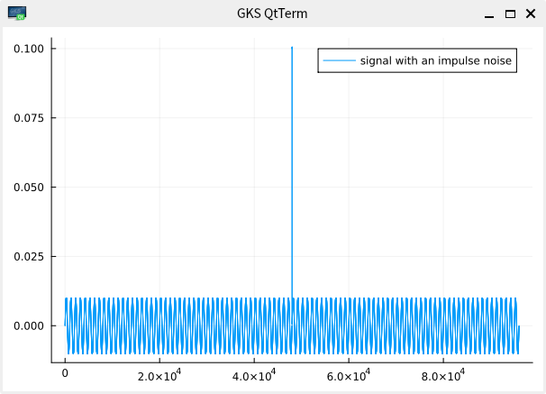
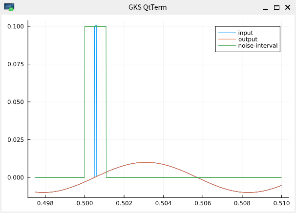
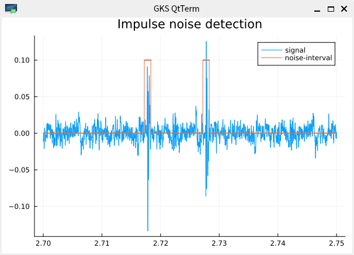
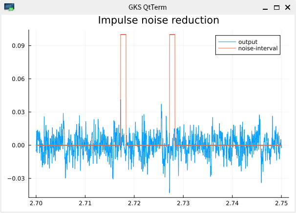
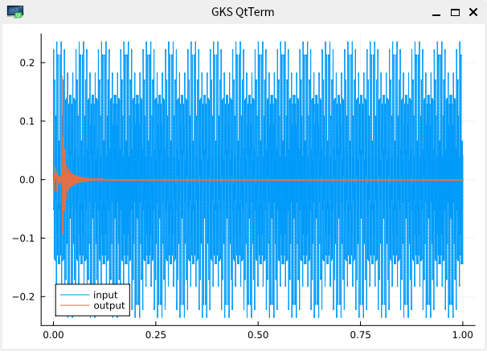
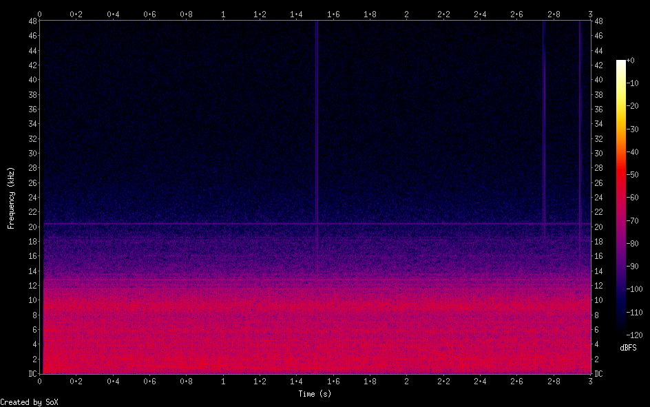
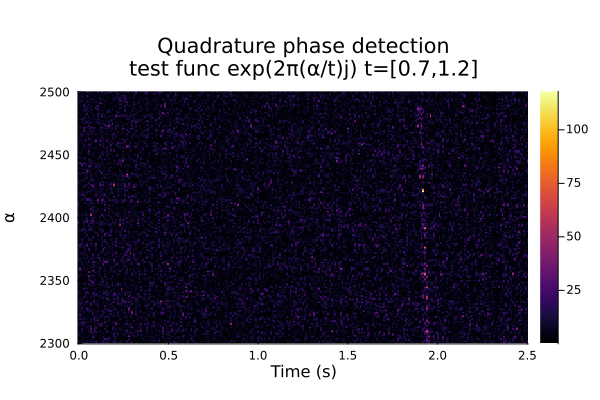

ELF 受信信号のノイズリダクション
磁気ピックアップで得られた ELF 信号には商用電源の高調波や散発的なインパルス状のノイズが含まれていて目的信号の検出の障害になっていました
これらを文献[1]に従いクラシカルな線形予測器を使って減らすことを試してみました
線形予測器は FIR フィルタの係数を出力が与えられた目的信号に近づくようにアップデートするものとみなすことができます
機械学習のような万能的な予測性はありませんが、計算が軽くフィルタ段数の半分の個数の正弦波を予測できることが知られています
図のように突発ノイズが正弦波に載っている場合

ノイズのある区間では時刻 tｰ1 までの出力から時刻 t の値を線形予測器で予測してそれを出力とし、ノイズのない区間では入力をそのまま出力することで突発ノイズを除くことができます

実際の ELF 受信データに適用した例でも


突発ノイズを抑制しそれらしく補間できているようです
突発ノイズのある区間の検出はごく簡単にはずれ値を見つけてその前後をノイズ区間としています
線スペクトルを持つ信号の抑制
十分な段数の線形予測器なら信号中の周波数が一定の成分を予測できるはずです
このことを利用し whistler波のような周波数が時変な目的信号を予測からはずれた誤差として取り出すことで 50Hzの高調波のように線スペクトルに近い信号を抑制することが考えられます
実際に磁気ピックアップにあらわれる高調波は複雑でこの方法では機械学習によるノイズリダクションのような大きな抑制効果を得ることはできないのですが計算が非常に軽いのが利点です
150Hz, 250Hz, 350Hz の正弦波を 0.1:0.1:0.05 の割合で足し合わせた信号でこの抑制を実験すると

のような結果になり時間とともに線形予測が適応していくと３つの正弦波成分はほぼ抑止されていることがわかります
信号を探して(2)で作った実際の磁気ピックアップからの信号に whistler波を合成した信号で突発ノイズと線スペクトルを持つ信号の抑制を行った結果は

のようになりました
この結果で同様に同期位相検波による whistler波の検出を試みると

となってノイズによる妨害が改善されていることがわかります
References
[1] 音声音響信号処理の基礎と実践 ｰフィルタ、ノイズ除去、音響エフェクトの原理ｰ、川村 新著、コロナ社
[2] https://github.com/baggepinnen/AdaptiveFilters.jl.git